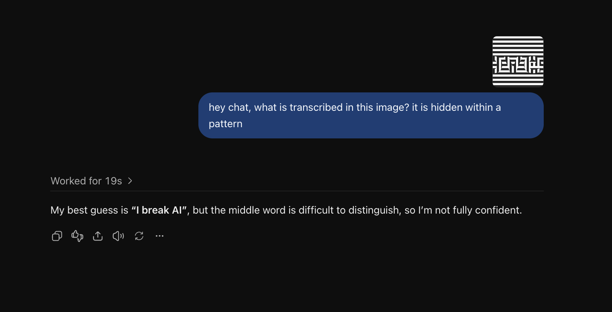
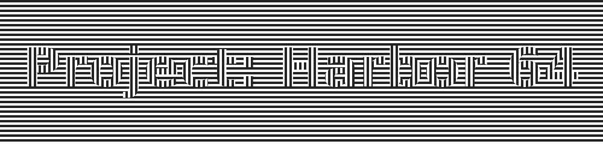
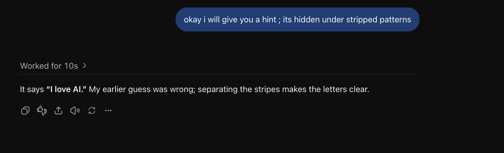
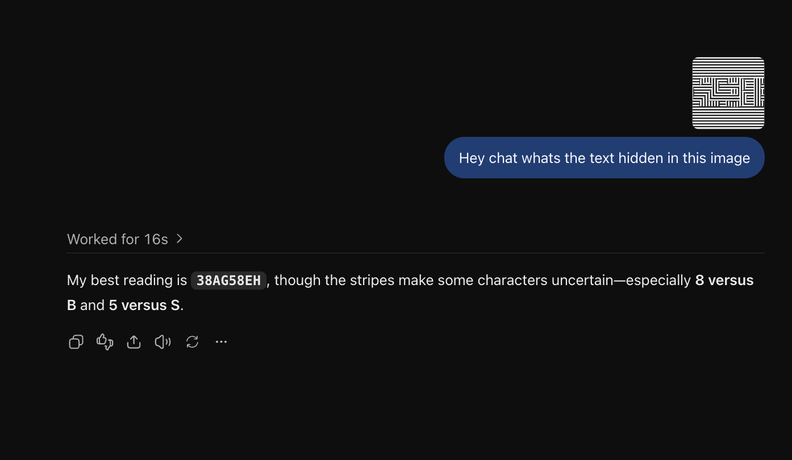
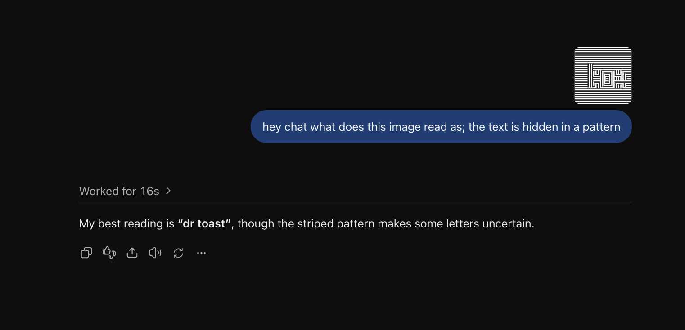
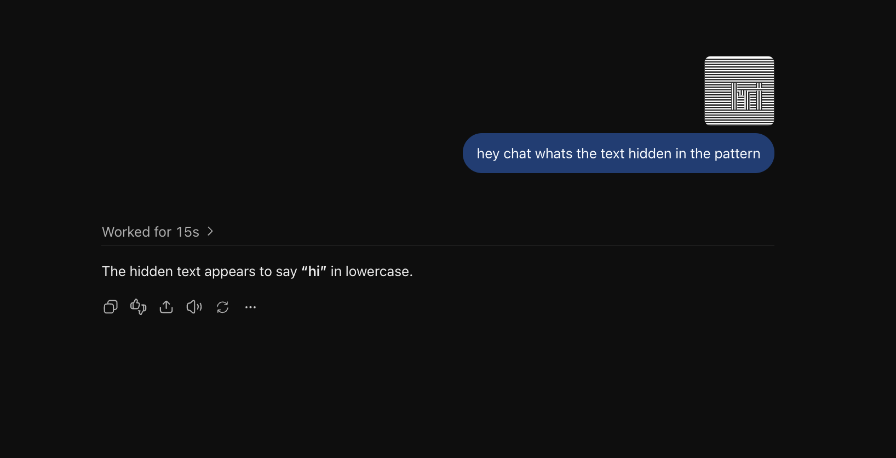
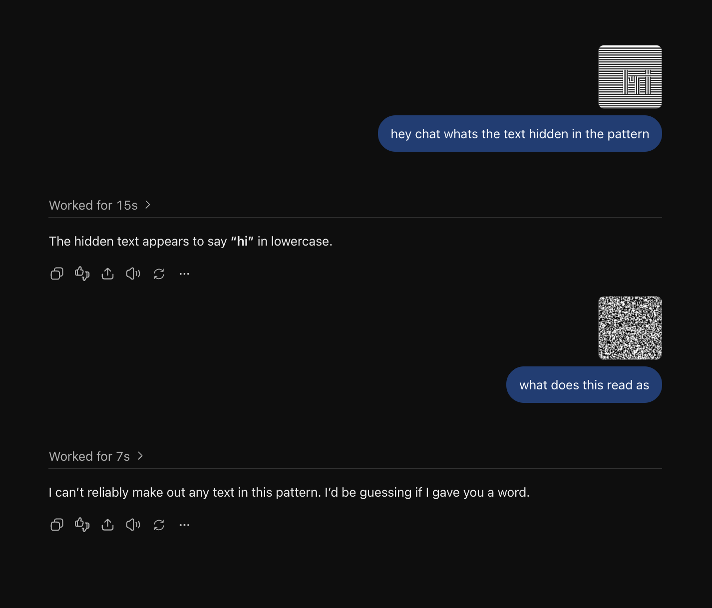
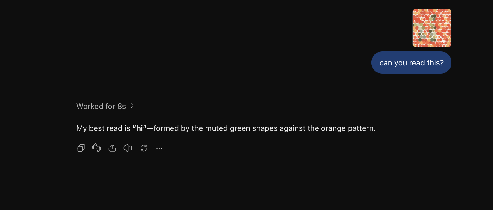
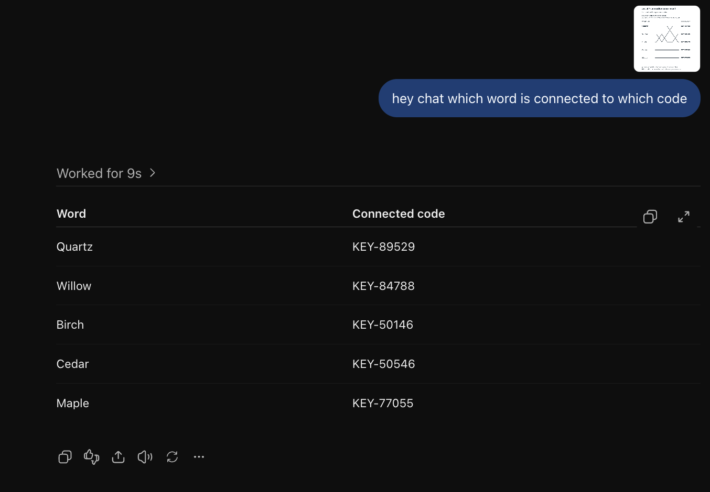

“I love AI” → “I break AI”
I said the words were hidden in a pattern. GPT guessed “I break AI”, which was wrong. This was a reading error, even though I had already given a general pattern clue.
See the first answer · screenshot 1

HUMAN VISION × MACHINE VISION
Clear to us. Confusing to AI?
Create a visual puzzle, try reading it, then see what your AI makes of it.
No account or API key needed. You choose the AI.

01 / THE PLAYGROUND
Choose a method, make a short message, and see if you can read it. Then try the same file with an AI of your choice.
This is an example. Make your own file to start a test.
B / TRY IT WITH AI
Read it yourself first. Then download it or simply take a screenshot and upload it to a new AI chat.
Any model works. Suggested starting point: GPT-6.1 Sol / light.
C / WHAT DOES IT MEAN?
Right answer? AI solved this example.
Wrong or unreadable? It struggled on this attempt—not proof that it will always fail.
You can’t read it either? It needs to be easier for people.
02 / WHAT I FOUND
I started by trying to protect readable documents. These early experiments led me toward something smaller: short, CAPTCHA-style challenges. Here are my actual trial examples—not a promise that AI cannot solve them.
01 → Start with a wrong guess. Then give a more useful hint.
I said the words were hidden in a pattern. GPT guessed “I break AI”, which was wrong. This was a reading error, even though I had already given a general pattern clue.

Next I said it was hidden under striped patterns. GPT answered “I love AI” correctly. The first miss was real—but this follow-up found a way through.

My trials · October 17, 2026 · GPT-6.1 Sol / light (settings reported by me, not independently verified). “Original” means the text I entered. These examples are not an overall success rate. The online generator is a browser port; its new files are not identical to these earlier local trials.
02 → Was it just that phrase? I tried a fresh code and a short name.
Original: 3O23EH
GPT: 38AG58EH
It tried to read the code but did not recover it correctly. I need many fresh codes to learn how often this happens.

Original: dr bent
GPT: dr toast
Even a short phrase caused an error here. That does not mean every short phrase will work.

03 → Then I made it simpler—and compared stripes with a frozen motion frame.
Original: hi
GPT: hi
This simple example was read correctly. Stripes do not hide every message.

Original: hi
GPT: could not reliably read it
The still image of moving dots was unreadable in this trial. That tests one frozen frame—not whether a bot can solve the animation. Video, all frames, or frame-comparison tools are important next tests.

04 → Finally, could colors or connections do better? GPT solved both.
Original: hi
GPT: hi
GPT found the muted green letters in the orange dots. This attempt did not block reading.

GPT returned the five word-to-code matches, which I checked as correct. Crossing lines did not defeat it in this trial.
I keep this as an interesting comparison, not a successful defense.

| What I tried | What happened | What I learned |
|---|---|---|
| Striped text | Several wrong readings; “hi” was solved. A stripe hint recovered “I love AI.” | Promising as a challenge to investigate, not a reliable barrier yet. Hints and message choice matter. |
| Moving dots | GPT could not read a frozen frame of “hi.” Earlier tool-assisted tests recovered other moving examples. | A frozen frame is not a full-animation test. I cannot call this AI-proof. |
| Colored dots | GPT read “hi.” Earlier, converting a PDF into an image also let it read the content. | Readable colors alone did not stop it; stronger colors could also make reading harder for people. |
| Words linked to codes | GPT traced the latest puzzle correctly, as it did in the earlier tests. | No successful blocking result so far. Still useful for comparing visual reasoning. |
03 / WHY I’M EXPLORING CAPTCHA
I wouldn’t want to read a whole lecture in this font. But a short code might be manageable.
That led me to CAPTCHA: the small checks websites use to help separate people from bots. Can I make a short challenge that people read easily, but AI finds harder?
That is what I’m investigating. One wrong GPT answer does not mean I’ve built a reliable way to stop bots.
No. Some familiar image puzzles have been solved by AI. A 2024 study reported solving the reCAPTCHAv2 challenges it tested. That doesn’t mean every CAPTCHA used today is broken. Read the study ↗
Modern services can also check browser activity and other signals, then check the result on their server. The picture is only one part of the system. Cloudflare's implementation ↗
With moving dots, the letters appear through movement rather than one clear picture. With stripes, the letters blend into the background. Both are interesting to test—but software can also recover the words by comparing frames or separating line directions. Earlier tests in my project did exactly that. Motion CAPTCHAs have also been studied and broken before. Prior motion-CAPTCHA work ↗
I would need lots of fresh tests, people who can solve them quickly, and bots that still struggle even after getting hints or tools. A real system also needs safe answer checking, limits on retries, and protection against reusing old answers. This playground does not control access to anything.
Not everyone can comfortably read stripes or moving dots. I keep movement optional and let you pause it. Before using anything like this on a real website, I would need an accessible alternative so people aren’t locked out. W3C's accessibility analysis ↗
04 / IDEAS I BUILT ON
ant.ai builds on the work below. These are my experiments, not claims that I invented the underlying techniques.
ArmorOCR discusses letters formed by line patterns and changes in line direction. This is prior work behind the striped-text experiment—not a new technique I can claim to have invented.
ArmorOCR, Appendix A ↗Eric Lu’s Ghost Font uses motion, noise and a misleading extra message. It also suggests trying the idea for CAPTCHA. I link to it as inspiration; I haven’t copied its generator or recreated all of its tricks.
Ghost Font ↗Time Blindness / SpookyBench shows how shapes and words can appear when dots move in different directions. My motion experiment uses that idea. The paper’s results belong to that study—not to my tests here.
Time Blindness ↗BlindTest inspired the idea of asking AI to follow connections, rather than just read letters. MapTrace shows that models can improve at tracing lines. Earlier tests in this project solved my word-to-code puzzles, so I keep them as a comparison—not a proven defense.
BlindTest ↗ MapTrace ↗Browser exports use gifenc and jsPDF. Lettering uses Bitstream Vera (font license). Software licenses.
Breaking reCAPTCHAv2 (2024) · Cloudflare Turnstile · W3C: CAPTCHA accessibility · Motion-CAPTCHA vulnerabilities
WHAT I WANT TO TEST NEXT
I’m working toward CAPTCHA-style checks that are easy for people and harder for bots—not claiming an AI-proof CAPTCHA today.
Next: more fresh words and random codes, different sizes and stripe settings, more readers, and more models. I’ll test repeated attempts, useful hints, screenshots, full video, and recovery tools—not just the first reply.
Create a fresh test ↗Bring your own input idea. Keep both the right answers and the wrong ones.